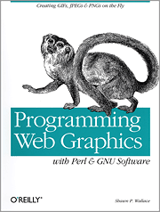
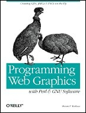
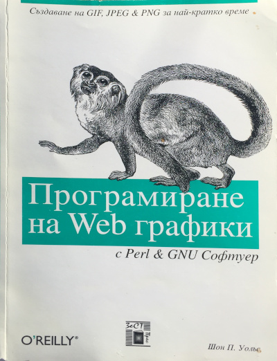
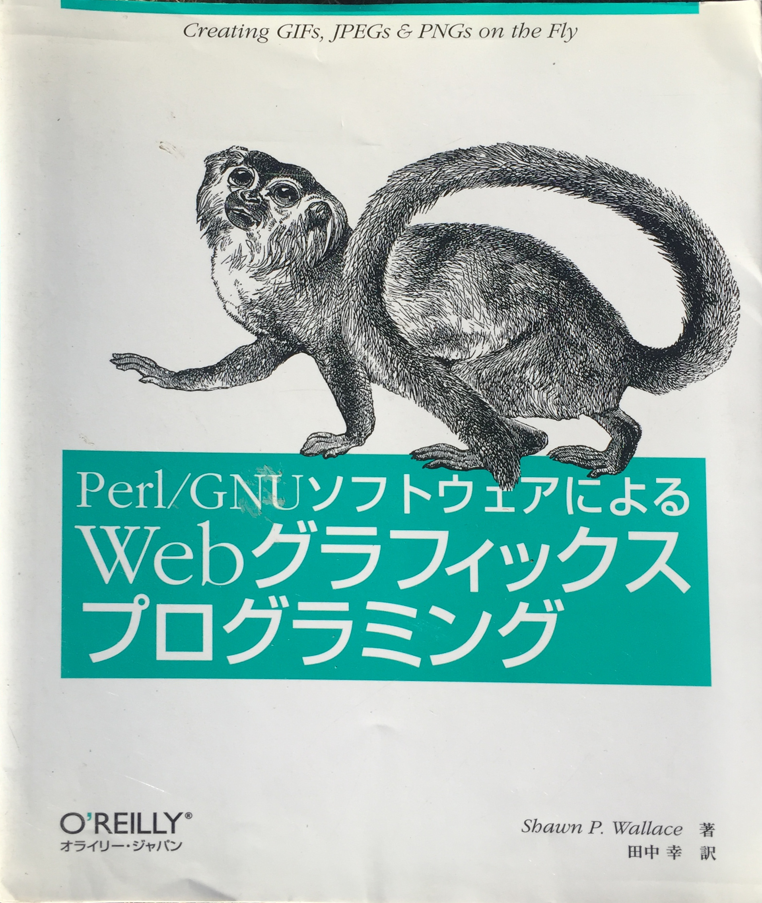

In 1998 I wrote a book called Programming Web Graphics. It's about how to write programs that generate graphics destined for the web. It was published by O'Reilly in early 1999.
The original draft of the cover featured these guinea hens that eventually made their way onto the cover of Programming Interactivity.

